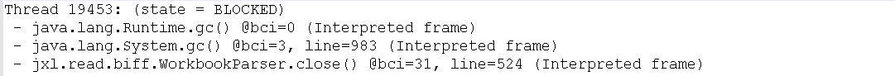
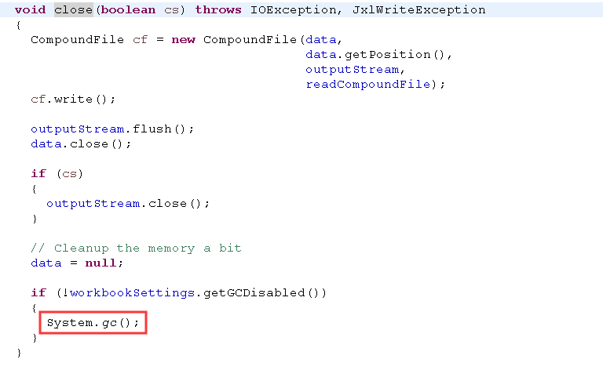
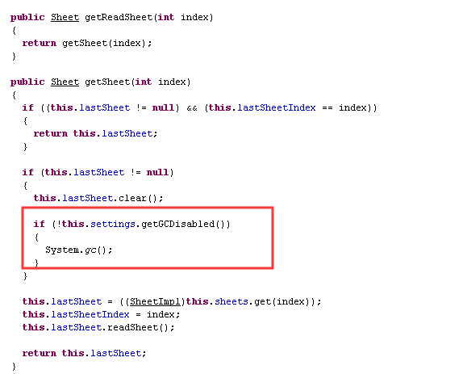
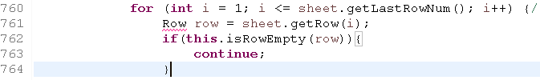
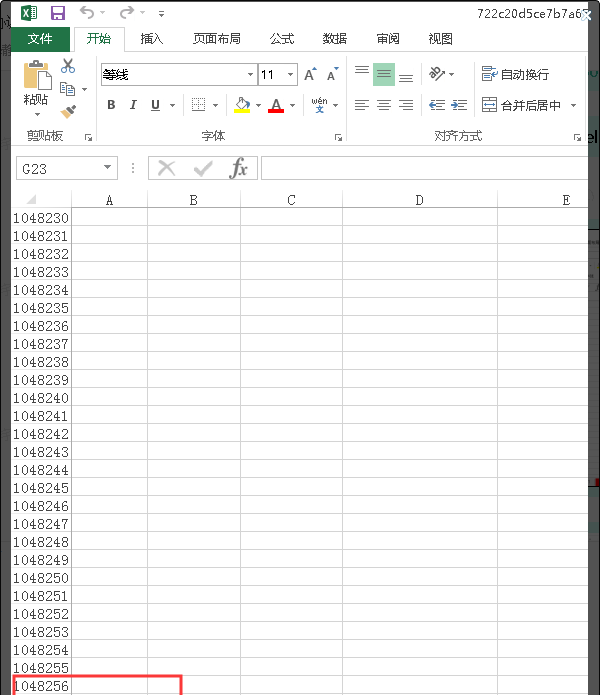

最近线上系统（JDK1.7）出现了多次FullGC，但是情况都不一样，今天有时间，将FullGC的排查思路以及如何解决记录下，供大家一起探讨。
系统发布上线之后，里面收到如下告警信息：
内容：计算周期：2019-11-15 00:16:00-18:00，节点：*.*.*.*，FullGC次数：63次（大于阈值：10次），已触发严重告警！收到上述告警信息之后，第一反应就是代码新发布的功能有问题；但是由于当天发布功能有点多，一时半会无法定位到是哪个功能引起的，因此从功能点排查引起FullGC有点难度；
换个角度，既然发生了FullGC，无外乎几种情况：
依据上述内容，先按照关键字gc()排查代码，发现代码中存在一个批量导出的功能，在for循环中每次都有显示调用，通过功能验证，发现每次代码执行到这里时都会收到告警信息；同时再次排查每次FullGC时jvm堆变换情况：
通过JVM内存使用情况可以确认，本次FullGC，PermGen、OldGen回收效率均为0%，说明虽然触发了FullGC但是由于并未到达上述2/3两种原因，因此可以再次确认是由于代码中显示调用System.gc引起的，在把代码注释掉之后再次验证，未出现FllGC情况；
场景一问题解决之后，过了2天，系统突然间又发生类似的情况，再次排查代码，发现系统中所有gc()关键字均没有了，此时无法确认问题原因。
为了明确该问题的原因，从服务器上导出gc的详细日志
2019-11-26T17:04:52.849+0800: 669022.072: [Full GC (System.gc()) 580M->409M(4096M), 1.2260290 s通过日志分析，发生FullGC的时候，依然是由于System.gc()导致的，但是代码中却没有，因此还需要分析所有请求，通过告警信息发现，所有告警均出现在2分钟之内，因此可以断定应该是跟某个功能相关，因此按照时间节点过滤这2分钟内容所有请求，通过对比发现，所有发生异常情况下均有一个业务请求在执行，通过代码分析发现这个请求是一个excel导入请求，为了明确此次fullGC的根本原因，需要导出javacore（线程快照）
通过分析快照日志发现：

线程中存在System.gc()方法，通过代码查看，在excel导入过程中使用了jxl组件，该组件中存在两个方法


上述两处均存在现实调用System.gc(),虽然有gcDisabled属性控制，但是通过代码排查发现未设置该属性，某人为false，因此只要使用到上述两个方法，均会触发FllGC。
因此建议不要在使用jxl组件，改为poi组件，或者在使用jxl组件时显示设置gcDisabled属性即可。
该场景跟上述都不一样，在系统运行一段时间之后，突然短时间内发生接口出现严重超时的情况，此时通过监控系统查看jvm堆情况，
发现OldGen已经快满了，因而触发FullGC，但是定位是由于什么触发GC，还是花费了一番功夫。
还是从日志下手，在出现FullGC的时候，发现在jvm中存在大量
org.apache.xmlbeans.impl.store.Xobj$AttrXobj
org.apache.xmlbeans.impl.store.Xobj$ElementXobj说明，系统中大概率存在操作poi，因此迅速排查poi关键字，逐个方法排查（问题发生已经超过2小时还未定位到到问题，此时心里已经是万分着急，但是再着急也需要平和心态，从已经日志和现象中逐一查找，不能随意猜测，此时的任何猜测均会引导你进入另一个歧途），发现在一个批量导入的场景中，存在如下代码：

上述代码的本意是将excel中的所有空行过滤掉，对于一个正常的excel是没有任何问题，但是如果是这样的一个excel文件，就可能会出现问题：

通过图中可以发现，该excel居然被创造出了100w行的空行，虽然通过上面的空过滤可以将这100w行过滤掉，但是不可忽视的是我们会创造近100w个Row对象，且这些对象在短时间内不能被垃圾回收，当程序执行完毕后，由于对象过大就会触发FullGC，导致发生Stop World，因此此时当前jvm的其他服务也会出现大量超时。
因此在处理excel的时候，务必先判断总行数、总大小，在做明细判断。
通过上述三个FullGC的处理场景，发现在发生FullGC的时候，大概率是跟我们代码编写有关，因此如何能够熟练使用各种java命令、以及日志分析，对我们能够快速定位问题是很有帮助的。
同时此处在跟大家分享一个个人心得：所有问题排查均需要建立在对业务十分熟悉的情况下，否则将会走很多弯路，因此建议大家不要单纯盲目迷恋技术，业务+技术才是我们立足的资本。